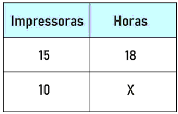
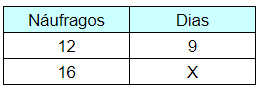
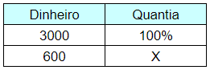

Regra de 3
Regra de 3 simples:
A regra de três é um processo matemático para a resolução de muitos problemas que envolvem duas ou mais grandezas diretamente ou inversamente proporcionais.
Nesse sentido, na regra de três simples, é necessário que três valores sejam apresentados, para que assim, descubra o quarto valor.
Em outras palavras, a regra de três permite descobrir um valor não identificado, por meio de outros três.
Referência: https://www.todamateria.com.br/regra-de-tres-simples-e-composta/

A comparação entre duas grandezas é bastante comum e necessária no cotidiano, e quando comparamos e verificamos sua proporção, podemos separá-las em dois casos importantes: grandezas diretamente proporcionais ou grandezas inversamente proporcionais.
Diretamente proporcionais: à medida que uma dessas grandezas aumenta, a outra também aumenta e na mesma proporção. Existem várias situações no nosso cotidiano que envolvem grandezas diretamente proporcionais, um exemplo seria a relação preço e peso na compra de uma determinada verdura, quanto menor a quantidade, menor o preço, e quanto maior a quantidade, maior o preço.
Inversamente proporcionais: à medida que uma dessas grandezas aumenta, a outra grandeza diminui na mesma proporção. Um exemplo dessa situação no cotidiano é a relação entre velocidade e tempo. Quanto maior a velocidade para percorrer-se determinado percurso, menor será o tempo.
Veja mais em: https://brasilescola.uol.com.br/matematica/regra-tres-simples.htm
Como construir:
1º) Construir uma tabela, agrupando as grandezas da mesma espécie em colunas e mantendo na mesma linha as grandezas de espécies diferentes em correspondência.
2º) Identificar se as grandezas são diretamente ou inversamente proporcionais.
3º) Montar a proporção e resolver a equação.
Referência: https://www.somatematica.com.br/fundam/regra3s.php
Vídeo Explicativo:
Exercícios:
a) Durante um naufrágio, os sobreviventes dividiram a comida que lhes sobrou em partes iguais. Sabendo que a quantidade de comida duraria 9 dias para os 12 náufragos, caso fossem encontrados mais 4 sobreviventes e a comida fosse redistribuída, a quantidade de dias aproximadamente que ela duraria seria de:
A) 2 dias.
B) 4 dias.
C) 5 dias.
D) 6 dias.
E) 8 dias.
A) 2 dias.
B) 4 dias.
C) 5 dias.
D) 6 dias.
E) 8 dias.
R: Alternativa D.
As grandezas envolvidas são dias e quantidade de náufragos. Se eu aumento a quantidade de náufragos, sabemos que o tempo de duração da comida diminui, logo essas grandezas são inversamente proporcionais.
Montando a tabela, temos que:

Como as grandezas são inversamente proporcionais, multiplicamos reto:
16x = 12 · 9
16x = 108
x = 108 / 16
x = 6,75
6 dias
Referência: https://static.mundoeducacao.uol.com.br/exercicios/2021/02/1-q1tabela.jpg
{kind=link}
b) A chuva, quando em excesso, traz vários problemas para a população. Em uma determinada cidade brasileira, houve a danificação da estrutura de uma ponte. Para arrumá-la, a prefeitura constatou que seriam necessários 12 funcionários para terminar a obra em 2 meses. Sabendo que era ano político e visando à reeleição, o prefeito decidiu que terminaria a obra em 15 dias. A quantidade de funcionários necessários para realizar a obra nesse período é de:
A) 18
B) 24
C) 36
D) 48
E) 52
A) 18
B) 24
C) 36
D) 48
E) 52
R: Alternativa D.
As grandezas são tempo e quantidade de funcionários, e, analisando a situação, sabemos que, para diminuir o tempo, a quantidade de funcionários precisa aumentar, logo, essas grandezas são inversamente proporcionais. Quando isso ocorre, construímos a tabela e multiplicamos reto. Como um tempo foi dado em dias, e o outro, em meses, utilizaremos 60 dias para representar os 2 meses.

Como as grandezas são inversamente proporcionais, multiplicamos reto:
15x = 12 · 60
15x = 720
x= 720 ÷ 15
x= 48
Referência: https://exercicios.brasilescola.uol.com.br/exercicios-matematica/exercicios-sobre-regra-tres-simples.htm
c) Um senhor pegou emprestado com um amigo uma quantia de R$ 3.000 para quitar uma dívida no banco. Entretanto esse senhor teve um gasto inesperado com seu carro e gastou a quantia de R$ 600. Quantos por cento esse senhor gastou do total?
R:

3000x = 100 * 600
3000x = 60000
x = 60000 / 3000
x = 20%
Referência: https://mundoeducacao.uol.com.br/matematica/regra-tres-simples.htm